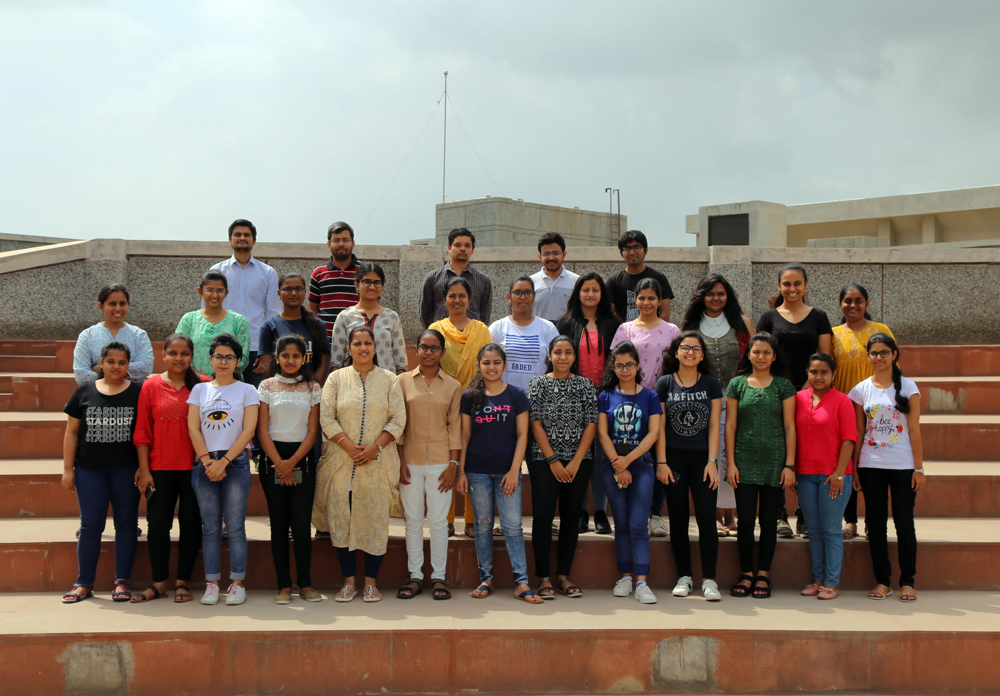
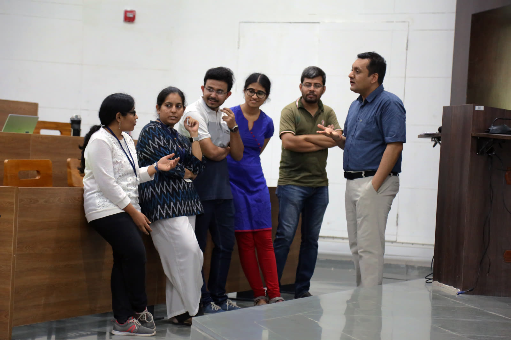

Places
I was born in a serene city called Nagpur, India. I grew up listening to Itihasas (historical texts), and Puranas (Folklore). This made me to be self aware and conscious of my existence from a young age. And so, I like talking to people and visiting different places to discover my role in the greater plan of nature. Thus, it has always been my dream to travel a lot, and observe different traditions, people, and their way of living. Along with that, I also developed interest in trekking.
Shoot me a message anytime if you want to talk with me regarding anything! I would love to have a talk with you over a cup of coffee 😊


ACM-W Summer School, IIT Gandhinagar (2019)

